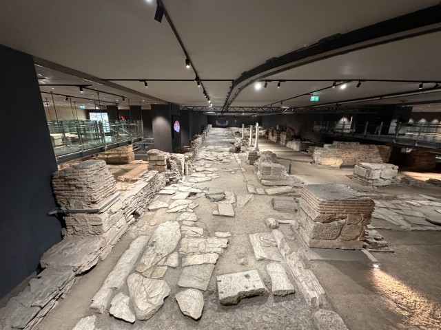
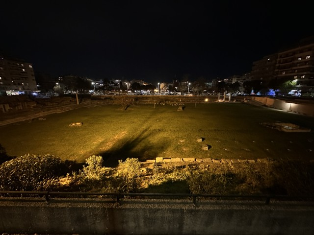
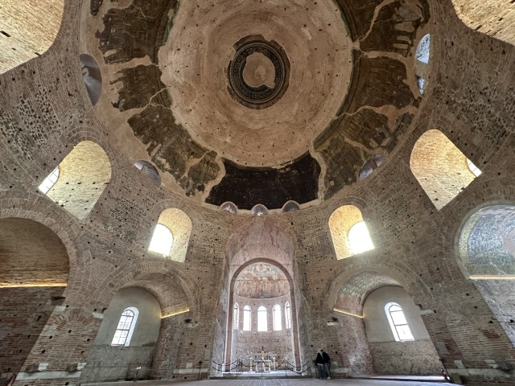
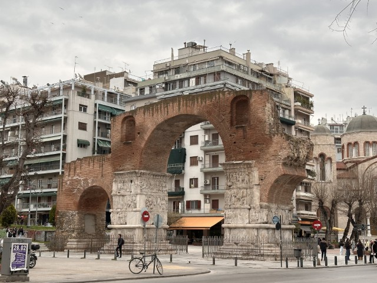
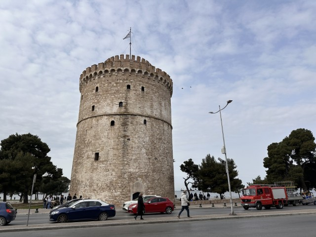
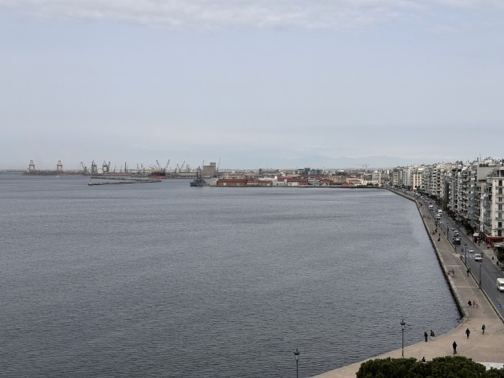
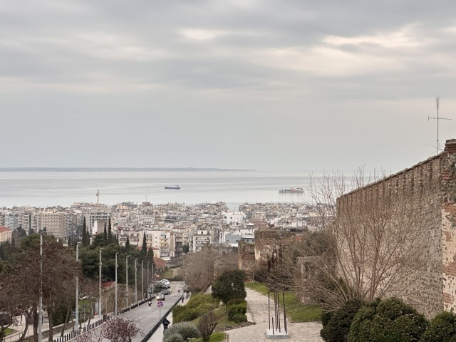
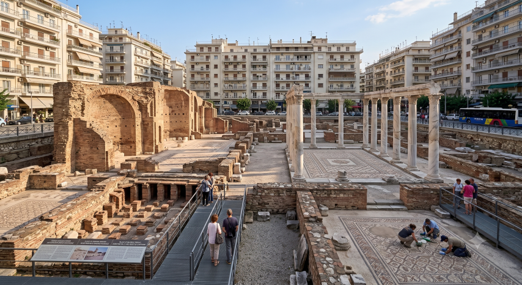
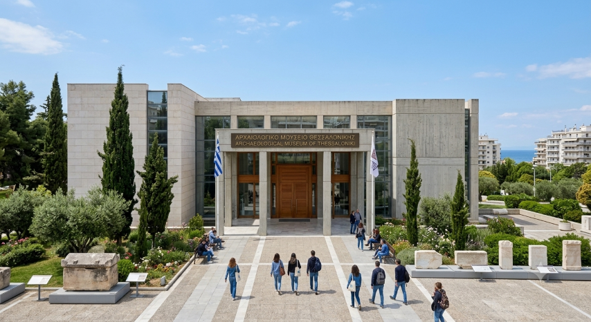

💡 行前懶人包
🛑 獨旅防雷與隱藏密技
🎫考古大景點免費入場神招
除了一年當中的特定節日，每年 11 月至隔年 3 月的每個月第一、第三個週日為免費開放日，冬令獨旅千萬別錯過！詳情請見官網。
🗺️ 必做體驗：塞薩洛尼基 10 大絕美景點
相較於雅典，塞薩洛尼基融合了更多拜占庭與羅馬時期的遺跡，整座城市更顯悠閒。以下整理出你此生必訪的 10 大景點：

1. Venizelou 地鐵站
2024年底通車的新地鐵站，在建設過程中挖掘出大規模的拜占庭時期古城遺跡。站內直接將千年古街道、商店遺址與現代交通結合，成為世界罕見的「地下博物館地鐵站」。
💭 Bryan 親測：是導遊推薦的在地景點。網路上很少相關介紹，但當我乘著手扶梯下去，見證那別有洞天的豁然開朗，而且還免費，真的大推！

2. 古羅馬廣場 Roman Forum
位於市中心的古羅馬廣場遺跡，曾是這座城市兩千多年前的政治與公共生活中心。園區內保留了古代劇場（Odeon）、浴場遺跡與地下迴廊。
💭 Bryan 親測：大家都說外面就能看得差不多了。但若是羅馬迷，就另當別論囉～

3. 加萊里烏斯圓頂大廳 Rotunda
建於西元4世紀初，最初可能是羅馬皇帝加萊里烏斯的陵墓或神廟，後來被改建為教堂與清真寺。這座圓柱形建築是聯合國教科文組織世界遺產，內部保留著早期基督教的精美馬賽克鑲嵌畫。
💭 Bryan 親測：非常巨大的穹頂與精美的馬賽克壁畫。雖然只剩一個大廳，卻能感受到被稱為希臘萬神殿曾經的輝煌！

4. 加萊里烏斯拱門 Arch of Galerius
又稱「卡馬拉（Kamara）」，是為慶祝羅馬皇帝加萊里烏斯戰勝波斯人而建的凱旋門。石柱上雕刻著密集的戰爭場景浮雕，如今是當地年輕人最熱門的碰面地標。
💭 Bryan 親測：城牆邊的雄偉拱門，周圍有很多中世紀的古蹟可以一併徒步參觀～

5. 白塔 White Tower
塞薩洛尼基最著名的城市地標與象徵，矗立於濱海大道旁。這座圓柱形堡壘曾是鄂圖曼帝國時期的監獄，如今內部作為城市歷史博物館，登頂可將愛琴海與城市天際線盡收眼底。
💭 Bryan 親測：個人覺得在外面拍照就好。裡頭雖然有城市歷史的介紹但幾乎只有希臘文，不曉得未來是否會改善><不過頂樓的觀景台是值得一看啦～

6. 塞薩洛尼基濱海大道 Thessaloniki Waterfront
沿著塞薩洛尼基海灣延伸的漫長濱海步道，是當地人最愛的休閒去處。沿途不僅能欣賞愛琴海夕陽，還有著名的「雨傘（Umbrellas）」現代裝置藝術，是拍照打卡的熱門景點。
💭 Bryan 親測：非常適合傍晚漫步，遠看白塔與欣賞沿路的裝置藝術。

7. 塞薩洛尼基衛城 Acropolis
位於城市高處的「上城區（Ano Poli）」，是少數逃過1917年大火的老城區。這裡保留了迷宮般的石板小巷、傳統拜占庭式建築，以及盤踞山頭的七塔堡壘（Heptapyrgion），是俯瞰整座城市的最佳制高點。
💭 Bryan 親測：說是衛城，但羅馬時期的建築已經幾乎看不到了。但雄偉的中世紀城牆保留很大一部分，與城市的天際線互相輝映，非常值得傍晚散步！

8. 加萊里烏斯皇宮 Palace of Galerius
羅馬皇帝加萊里烏斯在塞薩洛尼基建立的龐大宮殿建築群遺跡。如今殘存的八角形大廳與部分庭院地基，見證了這座城市作為羅馬帝國四帝共治時期帝都的榮耀。
💭 Bryan 親測：也是個從外面就差不多能看完的景點，除非你有遺址聯票或羅馬迷：）

9. 塞薩洛尼基考古博物館 Archaeological Museum of Thessaloniki
希臘最重要的博物館之一，全面展示了馬其頓地區從史前到羅馬時期的珍貴文物。館內收藏了大量精美的黃金飾品、精緻的青銅器以及馬其頓王國的考古發現。
🏔️ 塞薩洛尼基近郊一日遊：熱門景點與懶人玩法
📍 自行前往推薦
🎉 年度慶典：三大必訪時刻
🚆 交通全攻略：機場聯外與市區移動建議
📍 聯外交通
📍 市內交通
官方 OSETH 與常規票價
塞薩洛尼基交通局 (Thessaloniki Transport Authority) 負責營運市區巴士路線與未來通車的地鐵系統。
- 單程票：0.9€
- 機場巴士線：2.0€
購票與付款方式
塞薩洛尼基的大眾運輸系統不支援直接在閘門或感應機「嗶卡/嗶手機」扣款乘車，必須先購買票券：
• 公車票：公車上已全面取消現金，可於車內的「自動售票機」使用實體信用卡 (Visa/Mastercard) 或 Apple Pay / Google Pay 感應購買，購票後請務必在旁邊的驗票機打票啟用。
• 地鐵票：地鐵站內設有自動售票機（TVM），可使用現金或信用卡購買與儲值。
亦可至主要車站、站外售票機或市區報攤購買實體紙本票（ThessTicket）與儲值卡（ThessCard）。
🛏️ 住宿建議：精選安全且高性價比的獨旅避風港
| 🛏️ 住宿飯店 / 青旅 | 🔗 預訂連結 | 💰 平均房價參考 | ⭐ 旅客評分 | 💡 站長為何推薦 |
|---|---|---|---|---|
| Zeus is Loose Hostel 📍 Google Maps | EUR 30 - 50 / 晚 | 約 9.3 / 10 頂樓酒吧超讚，位置絕佳 |
位於市中心，以希臘神話為主題的現代化青旅。頂樓酒吧視野絕佳可俯瞰城市，床位乾淨隱私性高，社交氣氛極佳。 | |
| Jetpak Alternative Eco Hostel 📍 Google Maps | EUR 25 - 40 / 晚 | 約 8.9 / 10 環保理念，安靜溫馨 |
主打環保與永續的溫馨青旅，位於安靜的住宅區但離市區不遠。適合不喜歡派對喧囂、想好好休息的獨旅者。 | |
| RentRooms Thessaloniki 📍 Google Maps | EUR 40 - 70 / 晚 | 約 8.5 / 10 校區附近，高CP值 |
靠近亞里斯多德大學與圓頂大廳，提供青旅床位與平價獨立房。樓下就是自家的咖啡酒吧，年輕人多，生活機能方便。 | |
| Stay Hybrid Youth Hostel 📍 Google Maps | EUR 25 - 45 / 晚 | 約 8.7 / 10 音樂主題，天台舒適 |
結合音樂元素的潮流青旅。公共區域寬敞，頂樓天台非常適合放鬆。床鋪設計舒適，位置鄰近夜生活豐富的 Ladadika 區。 |
🍝 在地美食指南：不可錯過的北方小吃
🍽️ 必吃美食
塞薩洛尼基被譽為希臘的美食之都，深受小亞細亞與巴爾幹半島文化影響：
塞薩洛尼基最具代表性的早餐！酥脆的千層派皮包裹著香濃的粗粒小麥粉奶黃醬，撒上糖粉與肉桂，也有起司或絞肉的鹹口味。
誕生於塞薩洛尼基郊區的經典甜點。將酥皮折成三角形烤至金黃酥脆，裡面擠滿濃郁滑順的卡士達鮮奶油。
這是一道充滿愛琴海風味的淡菜（貽貝）抓飯。用新鮮淡菜與米飯、洋蔥、香草與檸檬一同燉煮，鮮味十足。
源自小亞細亞的香料肉捲。用牛絞肉混合大量孜然與大蒜烤製，通常搭配皮塔餅、番茄與洋蔥一同享用，肉汁豐富。
🎒 獨旅實戰：友好餐廳清單
在塞薩洛尼基，你絕不能錯過當地的「Meze」（下酒小菜）文化。以下精選 5 間適合獨旅者享用美食的餐廳：
| 🍴 餐廳 | 💰 價格水平 | 📍 交通位置 | 💡 站長推薦理由 |
|---|---|---|---|
| Τοίχο Τοίχο 📍 在地圖開啟 | 中低價位 | 上城區 (Ano Poli) 衛城城牆邊 |
位於老城牆旁，充滿復古氛圍。提供道地的希臘家常菜與 Meze (下酒小菜)，價格實惠，是爬完衛城後極佳的落腳處。 |
| Mezen Salonica 📍 在地圖開啟 | 中等價位 | 市中心，近古羅馬廣場 |
非常受當地人歡迎的現代小酒館。提供創意風味的 Meze，各式海鮮與肉類料理都很出色，強烈建議點杯齊普羅酒（Tsipouro）搭配。 |
| Full tou Meze 📍 在地圖開啟 | 中等價位 | Ladadika 區 |
位於熱鬧的 Ladadika 街區，裝潢成傳統雜貨店風格。菜單選擇極多，氣氛熱鬧，完美體驗希臘人吃小菜配酒的飲食文化。 |
| Tarti 📍 在地圖開啟 | 中高價位 | 市中心偏東 |
主打精緻地中海料理與海鮮。食材新鮮，擺盤精美，適合想在獨旅中好好犒賞自己一餐的旅客，服務非常友善。 |
| Ouzeri Lofos 📍 在地圖開啟 | 中等價位 | 上城區 (Ano Poli) |
隱藏在上城區的景觀餐廳！擁有俯瞰整個塞薩洛尼基與海灣的絕佳視野，餐點道地且份量足，絕對是看夕陽吃晚餐的首選。 |
🇬🇷 希臘懶人包
交通：城際交通巴士為主
希臘跨區的火車網絡較不發達，因此各大城市之間的往返強烈依賴城際巴士 (KTEL)。在塞薩洛尼基的 KTEL 總站可以搭車前往全希臘各主要城鎮。
金流：需要準備一些現金
雖然疫情後希臘的信用卡支付已大幅普及，但在傳統市場（如 Modiano 市場）、路邊販售 Koulouri（芝麻圈）的小攤、或是搭乘市區公車買票時，依然非常需要小面額的歐元紙鈔與硬幣。
注意：罷工較全面性
希臘工會相當強勢，罷工（Apergia）時常影響全面交通（包含機場、巴士、渡輪與計程車）。出發前務必確認當地新聞，以免被困在車站或飯店。

Bryan | Europe Solo Guide
「獨旅不是孤單，而是給自己一場完整的自由。」
熱愛穿梭在歐洲老城區的石板路上與壯麗群山間。目前已獨自走訪 41 個歐洲國家，致力於將複雜的交通、住宿與隱藏景點，轉化為有溫度的獨旅攻略。希望這篇文章能幫你省下找資料的時間，把精力留給旅途中的美好。
✉️ 聯繫我 / 合作邀約